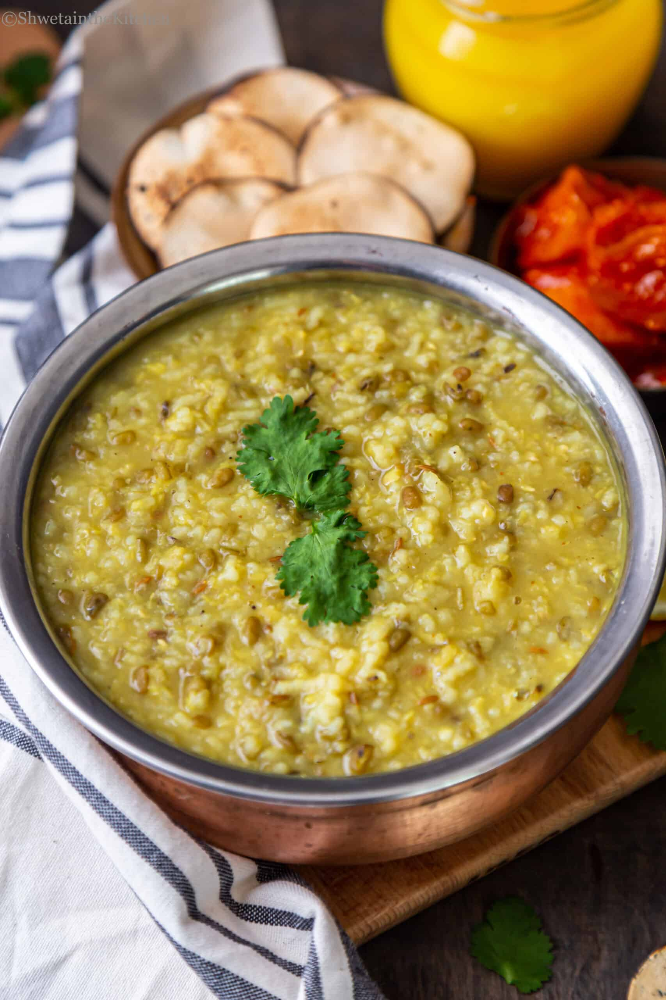
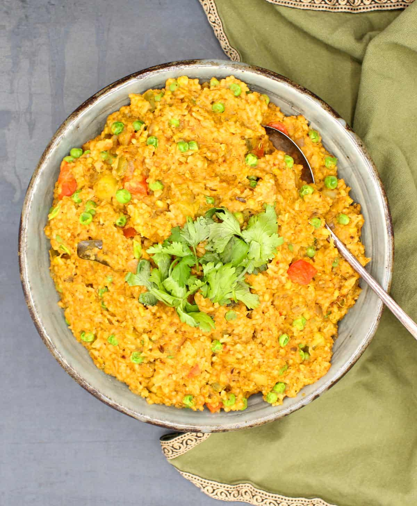

Khichdi: A fitting end!

Perhaps one of the health and comfort food recipes is made with a combination of rice and moong dal. Across India, khichdi recipes are made for different reasons and occasions, but the basic ingredients and combinations remain the same. Generally, it has all spices and flavors in it and is served as it is without any sides, but tastes great when served with a hint of pickle or creamy yogurt.
As I was explaining earlier, there are myriad ways you can prepare a simple and easy lentil-based khichdi recipe. Each variation is simple, derived by the way the lentil and rice combination is used. In addition to it, the choice of lentils also derives a unique and comforting taste. However, the most popular and common lentil used is moong dal and this post is dedicated to it.
CALORIE INTAKE: 768 KCAL PER SERVING
Here are the key steps to read before you start so you know where you are going:

Rice to Dal Ratio The universal ratio between dal and rice for any khichdi is 1:1. However, you may alter it for various reasons. You may increase the rice ratio as per your preference. But I do not recommend increasing the lentil ratio above 1.
Cleaning: The rice and dal has to be thoroughly cleaned and rinsed before it is cooked. Washing with water not only helps to remove impurities but also flushes out excess amounts of starch from rice and dal.
Vegetables: The basic dal khichdi is made with just 2 main ingredients, i.e. dal and rice. However, it can be further extended by adding the choice of vegetables. You may add carrots, beans, peas, and potatoes for a vegetable khichdi.
Seasonings: Once the dal and rice are pressure cooked, it is topped with onion and tomato seasonings. This helps to add more flavor and taste to the final product.
Serve Hot: Khichdi is best served while it is still hot. After it is rested it may turn like cake and may not be pleasant to serve. It is better to reheat it by adding water and serve immediately.
We hope this tutorial has helped you as much as it helped us!!